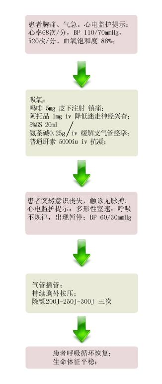

【病例摘要】
- 现病史：患者，男，73岁 ，左胸部疼痛伴气促2天，咯血一次，约10ml。患者自觉活动后气急明显，无发热。
- 既往史：患有＂前列腺癌＂史4年，已行手术治疗，但近半年来PSA有进行性升高，在３个月前开始服用＂孕酮＂。
- 查体：T 36.8℃，P 68次/分，R 20次/分，Bp 110/70mmHg，两下肺呼吸音低，可闻及少量湿罗音，心界左侧扩大，心率68次／分，律齐。右下肢肿胀，右小腿周径39cm，左小腿周径36.5cm。

【辅助检查】
- D-二聚体

- 凝血功能:

- 心电图:

- CTPA:

【诊断】
- 肺动脉栓塞 深静脉血栓形成
【事件】
